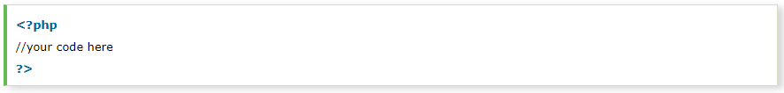
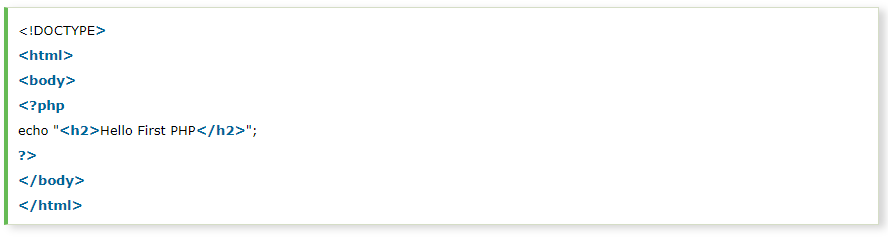
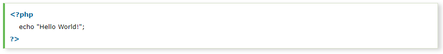
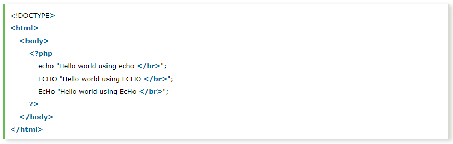
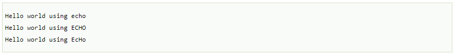
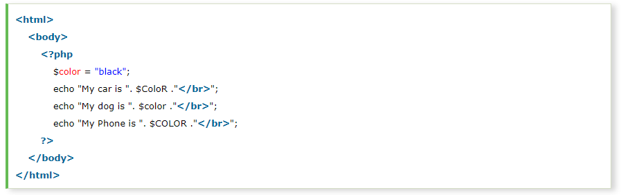
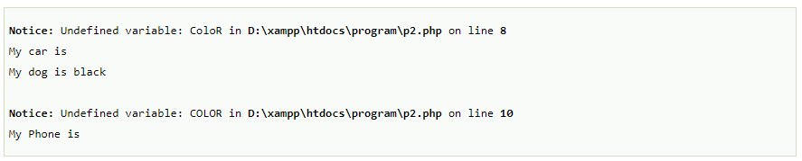

Generally, a PHP file contains HTML tags and some PHP scripting code. It is very easy to create a simple PHP example. To do so, create a file and write HTML tags + PHP code and save this file with .php extension.
All PHP code goes between the php tag. It starts with <?php and ends with ?>. The syntax of PHP tag is given below:
Let's see a simple PHP example where we are writing some text using PHP echo command.
File: first.php
How to run PHP programs in XAMPP PHP is a popular backend programming language. PHP programs can be written on any editor, such as - Notepad, Notepad++, Dreamweaver, etc. These programs save with .php extension, i.e., filename.php inside the htdocs folder.
For example- p1.php.
As I'm using window, and my XAMPP server is installed in D drive. So, the path for the htdocs directory will be "D:\xampp\htdocs".
PHP program runs on a web browser such as - Chrome, Internet Explorer, Firefox, etc. Below some steps are given to run the PHP programs.

Most of the time, PHP programs run as a web server module. However, PHP can also be run on CLI (Command Line Interface).
In PHP, keyword (e.g., echo, if, else, while), functions, user-defined functions, classes are not case-sensitive. However, all variable names are case-sensitive.
In the below example, you can see that all three echo statements are equal and valid:
Output
Look at the below example that the variable names are case sensitive. You can see the example below that only the second statement will display the value of the $color variable. Because it treats $color, $ColoR, and $COLOR as three different variables:
Output
Only $color variable has printed its value, and other variables $ColoR and $COLOR are declared as undefined variables. An error has occurred in line 5 and line 7.